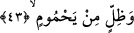
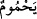
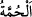
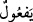
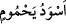
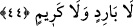

de gündüz eser.
“Ve kaynar su içinde” ki bu su, son derece yakıcıdır.
43. Kapkara dumandan bir gölge altındadırlar;
Âyet-i kerîmede geçen
(yahmûm) kelimesi, “duman” ve “her şeyin en siyahı”
demektir. Kamus’ta da ifâde edildiği gibi, kömür anlamındaki
(humme) kökünden
(yef‘ûl) vezninde olan bir kelimedir. Araplar kömürün en karasını ifâde etmek
üzere
(esvedü yahmûmin) derler.
Dahhâk demiştir ki: Cehennem ateşi siyah, içinde yananlar da siyah ve cehennemin
içinde başka ne varsa hepsi simsiyahtır. Bu sebeple cennette yüzlerdeki ben, gözlerin
kirpikleri ve kaşlar dışında siyah renkte hiçbir şey bulunmaz.
Fakir (Bursevî) der ki: Zamanımızda yaygın halde içilen tütün hakkında bu âyet-i
kerîmede bir sakındırma vardır. Tütün içildiğinde çıkan dumanı ve getirdiği bütün
zararlarıyla birlikte içenin başı üzerinde yükselip gölge gibi bir bulut oluşturur. Ancak
şu an konumuz o olmadığı için tütün ve sigaranın mahzurlarını saymaya girmeyeceğiz.
Tefsirlerde belirtildiği gibi haram olan bu kötü alışkanlığa mübtelâ olanların ondan ve
zararlarından kurtulmaları ve âfiyet bulmaları için Allah’tan yardım dileriz.
44. Serin ve hoş olmayan.
Bu cehennem gölgesi, diğer gölgeler gibi serin değildir. Kendisine sığınanlara, yakıcı
sıcağın eleminden korumak türünden bir fayda sağlamaz. Cenâb-ı Hak bu beyânıyla,
gölge kavramının düşündürdüğü “dinlendirip rahat ettirme” mânâlarını kaldırmıştır.
Yâni önce onu “gölge” diye isimlendirmiş sonra da onun yakıcı sıcaklığın elemini
serinletme ve rahatlık verme gibi vasıflarını nefyetmiştir. Böylece onun bilinen mânâda
“gölge” olmadığı kesinlik kazanmıştır.
“Kerem”, kendi alanında hoşa giden, râzı olunan ve övgüye lâyık olan her şeyi ifâde
eden bir tâbirdir.
Aslında gölge iki faydadan dolayı aranır: Serinliği ve sıcaklığın verdiği rahatsızlığı
gidermesi. Bahsedilen cehennem gölgesinin serinliğinden istifâde edilemez; çünkü onda
böyle bir serinlik yoktur. Hiç hava cereyânı ve akımı olmayacak şekilde her tarafı
kapalı evlere sığınan kişinin, her ne kadar güneşin rahatsız edici harâretinden kurtulsa
da bulunduğu ortam serin olmadığından istirahat edemediği gibi.